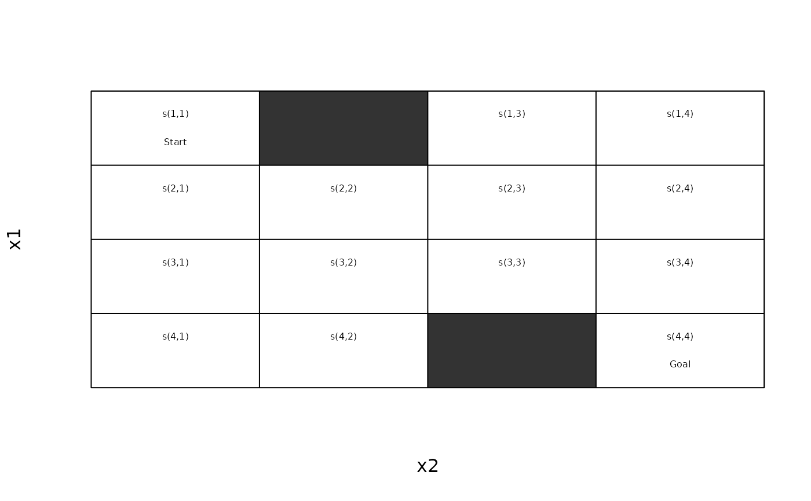
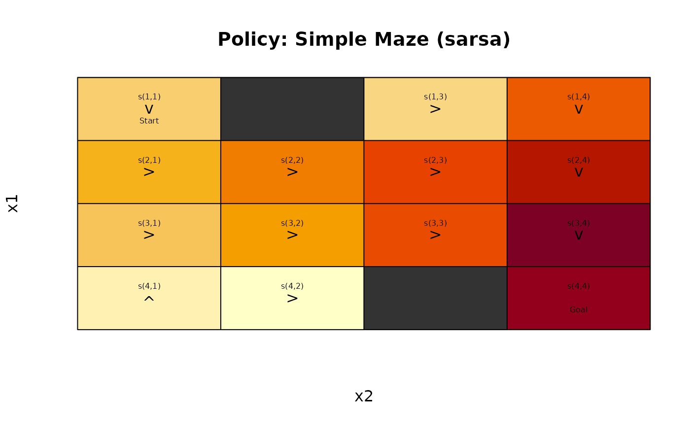

Sample trajectories using an MDPSample.
Usage
# S3 method for class 'MDPSample'
sample_MDP(
model,
n,
start = NULL,
horizon = NULL,
epsilon = NULL,
exploring_starts = FALSE,
trajectories = FALSE,
progress = TRUE,
verbose = FALSE,
...
)Arguments
- model
an MDPSample model.
- n
number of trajectories.
- start
start state.
- horizon
epochs end once an absorbing state is reached or after the maximal number of epochs specified via
horizon. IfNULLthen the horizon for the model is used.- epsilon
the probability of random actions for using an epsilon-greedy policy. Default for solved models is 0 and for unsolved model 1.
- exploring_starts
logical; randomly sample a start/action combination to start the episode from.
- trajectories
logical; return the complete trajectories.
- progress
show a progress bar?
- verbose
report used parameters
- ...
further arguments are ignored.
Value
A list with elements:
avg_return: The average discounted return.reward: Reward for each trajectory.trajectories: A data.frame with the trajectories. Each row contains theepisodeid, thetimestep, the states, the chosen actiona, the rewardr, and the next states_prime. Trajectories are only returned fortrajectories = TRUE.
See also
Other MDP:
MDP(),
absorbing_states(),
act(),
action_state_helpers,
available_actions(),
find_reachable_states(),
reachable_states(),
sample_MDP(),
start,
transition_graph(),
transition_matrix(),
unreachable_states()
Other MDPSample:
MDPSample(),
absorbing_states(),
act(),
action_state_helpers,
reachable_states(),
solve_MDP_PG(),
start
Examples
# enable parallel simulation (useful for sampling with large n)
# doParallel::registerDoParallel()
# Create a simple maze with the layout:
# XXXXXX
# XSX X
# X X
# X X
# X XGX
# XXXXXX
model <- gw_maze_MDP(
dim = s(4, 4),
start = s(1, 1),
goal = s(4, 4),
walls = rbind(s(1, 2), s(4, 3)),
discount = 0.95,
access = "sample",
name = "Simple Maze"
)
model
#> MDPSample, MDP - Simple Maze
#> Discount factor: 0.95
#> Horizon: Inf epochs
#> Size: 4 actions / 14 states
#> Start: s(1,1)
#> List components: ‘name’, ‘discount’, ‘horizon’, ‘actions’, ‘states’,
#> ‘start’, ‘absorbing_states’, ‘transition_model’, ‘info’
gw_plot(model)

# sample a random walk (epsilon = 1) from the unsolved MDP
set.seed(1234)
sim <- sample_MDP(model, horizon = 500, n = 1,
verbose = TRUE, trajectories = TRUE)
#> Sampling MDPSample trajectories.
#> - horizon: 500
#> - n: 1 - parallel workers: 1
#> - epsilon: 1
#> - discount factor: 0.95
#>
sim
#> $avg_return
#> [1] -19.98231
#>
#> $reward
#> [1] -19.98231
#>
#> $action_cnt
#> up right down left
#> 37 52 39 46
#>
#> $state_cnt
#> s(1,1) s(1,3) s(1,4) s(2,1) s(2,2) s(2,3) s(2,4) s(3,1) s(3,2) s(3,3) s(3,4)
#> 18 11 12 9 8 9 15 16 17 13 12
#> s(4,1) s(4,2) s(4,4)
#> 18 15 1
#>
#> $trajectories
#> episode time s a r s_prime
#> 1 1 0 s(1,1) left -1 s(1,1)
#> 2 1 1 s(1,1) left -1 s(1,1)
#> 3 1 2 s(1,1) right -1 s(1,1)
#> 4 1 3 s(1,1) right -1 s(1,1)
#> 5 1 4 s(1,1) up -1 s(1,1)
#> 6 1 5 s(1,1) left -1 s(1,1)
#> 7 1 6 s(1,1) down -1 s(2,1)
#> 8 1 7 s(2,1) up -1 s(1,1)
#> 9 1 8 s(1,1) up -1 s(1,1)
#> 10 1 9 s(1,1) right -1 s(1,1)
#> 11 1 10 s(1,1) left -1 s(1,1)
#> 12 1 11 s(1,1) left -1 s(1,1)
#> 13 1 12 s(1,1) right -1 s(1,1)
#> 14 1 13 s(1,1) down -1 s(2,1)
#> 15 1 14 s(2,1) right -1 s(2,2)
#> 16 1 15 s(2,2) right -1 s(2,3)
#> 17 1 16 s(2,3) right -1 s(2,4)
#> 18 1 17 s(2,4) down -1 s(3,4)
#> 19 1 18 s(3,4) right -1 s(3,4)
#> 20 1 19 s(3,4) left -1 s(3,3)
#> 21 1 20 s(3,3) right -1 s(3,4)
#> 22 1 21 s(3,4) right -1 s(3,4)
#> 23 1 22 s(3,4) left -1 s(3,3)
#> 24 1 23 s(3,3) right -1 s(3,4)
#> 25 1 24 s(3,4) left -1 s(3,3)
#> 26 1 25 s(3,3) left -1 s(3,2)
#> 27 1 26 s(3,2) up -1 s(2,2)
#> 28 1 27 s(2,2) left -1 s(2,1)
#> 29 1 28 s(2,1) left -1 s(2,1)
#> 30 1 29 s(2,1) left -1 s(2,1)
#> 31 1 30 s(2,1) down -1 s(3,1)
#> 32 1 31 s(3,1) left -1 s(3,1)
#> 33 1 32 s(3,1) down -1 s(4,1)
#> 34 1 33 s(4,1) down -1 s(4,1)
#> 35 1 34 s(4,1) up -1 s(3,1)
#> 36 1 35 s(3,1) right -1 s(3,2)
#> 37 1 36 s(3,2) up -1 s(2,2)
#> 38 1 37 s(2,2) right -1 s(2,3)
#> 39 1 38 s(2,3) right -1 s(2,4)
#> 40 1 39 s(2,4) down -1 s(3,4)
#> 41 1 40 s(3,4) left -1 s(3,3)
#> 42 1 41 s(3,3) down -1 s(3,3)
#> 43 1 42 s(3,3) left -1 s(3,2)
#> 44 1 43 s(3,2) left -1 s(3,1)
#> 45 1 44 s(3,1) left -1 s(3,1)
#> 46 1 45 s(3,1) down -1 s(4,1)
#> 47 1 46 s(4,1) down -1 s(4,1)
#> 48 1 47 s(4,1) up -1 s(3,1)
#> 49 1 48 s(3,1) down -1 s(4,1)
#> 50 1 49 s(4,1) right -1 s(4,2)
#> 51 1 50 s(4,2) left -1 s(4,1)
#> 52 1 51 s(4,1) left -1 s(4,1)
#> 53 1 52 s(4,1) left -1 s(4,1)
#> 54 1 53 s(4,1) right -1 s(4,2)
#> 55 1 54 s(4,2) down -1 s(4,2)
#> 56 1 55 s(4,2) right -1 s(4,2)
#> 57 1 56 s(4,2) up -1 s(3,2)
#> 58 1 57 s(3,2) down -1 s(4,2)
#> 59 1 58 s(4,2) right -1 s(4,2)
#> 60 1 59 s(4,2) up -1 s(3,2)
#> 61 1 60 s(3,2) right -1 s(3,3)
#> 62 1 61 s(3,3) left -1 s(3,2)
#> 63 1 62 s(3,2) down -1 s(4,2)
#> 64 1 63 s(4,2) right -1 s(4,2)
#> 65 1 64 s(4,2) up -1 s(3,2)
#> 66 1 65 s(3,2) up -1 s(2,2)
#> 67 1 66 s(2,2) left -1 s(2,1)
#> 68 1 67 s(2,1) up -1 s(1,1)
#> 69 1 68 s(1,1) up -1 s(1,1)
#> 70 1 69 s(1,1) left -1 s(1,1)
#> 71 1 70 s(1,1) right -1 s(1,1)
#> 72 1 71 s(1,1) up -1 s(1,1)
#> 73 1 72 s(1,1) down -1 s(2,1)
#> 74 1 73 s(2,1) down -1 s(3,1)
#> 75 1 74 s(3,1) left -1 s(3,1)
#> 76 1 75 s(3,1) right -1 s(3,2)
#> 77 1 76 s(3,2) left -1 s(3,1)
#> 78 1 77 s(3,1) down -1 s(4,1)
#> 79 1 78 s(4,1) right -1 s(4,2)
#> 80 1 79 s(4,2) down -1 s(4,2)
#> 81 1 80 s(4,2) up -1 s(3,2)
#> 82 1 81 s(3,2) left -1 s(3,1)
#> 83 1 82 s(3,1) down -1 s(4,1)
#> 84 1 83 s(4,1) right -1 s(4,2)
#> 85 1 84 s(4,2) up -1 s(3,2)
#> 86 1 85 s(3,2) right -1 s(3,3)
#> 87 1 86 s(3,3) down -1 s(3,3)
#> 88 1 87 s(3,3) right -1 s(3,4)
#> 89 1 88 s(3,4) left -1 s(3,3)
#> 90 1 89 s(3,3) up -1 s(2,3)
#> 91 1 90 s(2,3) up -1 s(1,3)
#> 92 1 91 s(1,3) down -1 s(2,3)
#> 93 1 92 s(2,3) down -1 s(3,3)
#> 94 1 93 s(3,3) right -1 s(3,4)
#> 95 1 94 s(3,4) up -1 s(2,4)
#> 96 1 95 s(2,4) left -1 s(2,3)
#> 97 1 96 s(2,3) right -1 s(2,4)
#> 98 1 97 s(2,4) down -1 s(3,4)
#> 99 1 98 s(3,4) right -1 s(3,4)
#> 100 1 99 s(3,4) left -1 s(3,3)
#> 101 1 100 s(3,3) left -1 s(3,2)
#> 102 1 101 s(3,2) up -1 s(2,2)
#> 103 1 102 s(2,2) down -1 s(3,2)
#> 104 1 103 s(3,2) down -1 s(4,2)
#> 105 1 104 s(4,2) up -1 s(3,2)
#> 106 1 105 s(3,2) left -1 s(3,1)
#> 107 1 106 s(3,1) down -1 s(4,1)
#> 108 1 107 s(4,1) right -1 s(4,2)
#> 109 1 108 s(4,2) down -1 s(4,2)
#> 110 1 109 s(4,2) up -1 s(3,2)
#> 111 1 110 s(3,2) down -1 s(4,2)
#> 112 1 111 s(4,2) left -1 s(4,1)
#> 113 1 112 s(4,1) left -1 s(4,1)
#> 114 1 113 s(4,1) left -1 s(4,1)
#> 115 1 114 s(4,1) left -1 s(4,1)
#> 116 1 115 s(4,1) up -1 s(3,1)
#> 117 1 116 s(3,1) left -1 s(3,1)
#> 118 1 117 s(3,1) down -1 s(4,1)
#> 119 1 118 s(4,1) left -1 s(4,1)
#> 120 1 119 s(4,1) down -1 s(4,1)
#> 121 1 120 s(4,1) up -1 s(3,1)
#> 122 1 121 s(3,1) right -1 s(3,2)
#> 123 1 122 s(3,2) right -1 s(3,3)
#> 124 1 123 s(3,3) down -1 s(3,3)
#> 125 1 124 s(3,3) left -1 s(3,2)
#> 126 1 125 s(3,2) up -1 s(2,2)
#> 127 1 126 s(2,2) right -1 s(2,3)
#> 128 1 127 s(2,3) right -1 s(2,4)
#> 129 1 128 s(2,4) right -1 s(2,4)
#> 130 1 129 s(2,4) right -1 s(2,4)
#> 131 1 130 s(2,4) up -1 s(1,4)
#> 132 1 131 s(1,4) up -1 s(1,4)
#> 133 1 132 s(1,4) left -1 s(1,3)
#> 134 1 133 s(1,3) up -1 s(1,3)
#> 135 1 134 s(1,3) up -1 s(1,3)
#> 136 1 135 s(1,3) right -1 s(1,4)
#> 137 1 136 s(1,4) right -1 s(1,4)
#> 138 1 137 s(1,4) right -1 s(1,4)
#> 139 1 138 s(1,4) right -1 s(1,4)
#> 140 1 139 s(1,4) right -1 s(1,4)
#> 141 1 140 s(1,4) up -1 s(1,4)
#> 142 1 141 s(1,4) left -1 s(1,3)
#> 143 1 142 s(1,3) down -1 s(2,3)
#> 144 1 143 s(2,3) left -1 s(2,2)
#> 145 1 144 s(2,2) left -1 s(2,1)
#> 146 1 145 s(2,1) down -1 s(3,1)
#> 147 1 146 s(3,1) right -1 s(3,2)
#> 148 1 147 s(3,2) left -1 s(3,1)
#> 149 1 148 s(3,1) up -1 s(2,1)
#> 150 1 149 s(2,1) right -1 s(2,2)
#> 151 1 150 s(2,2) right -1 s(2,3)
#> 152 1 151 s(2,3) right -1 s(2,4)
#> 153 1 152 s(2,4) up -1 s(1,4)
#> 154 1 153 s(1,4) down -1 s(2,4)
#> 155 1 154 s(2,4) down -1 s(3,4)
#> 156 1 155 s(3,4) up -1 s(2,4)
#> 157 1 156 s(2,4) right -1 s(2,4)
#> 158 1 157 s(2,4) right -1 s(2,4)
#> 159 1 158 s(2,4) left -1 s(2,3)
#> 160 1 159 s(2,3) up -1 s(1,3)
#> 161 1 160 s(1,3) up -1 s(1,3)
#> 162 1 161 s(1,3) up -1 s(1,3)
#> 163 1 162 s(1,3) up -1 s(1,3)
#> 164 1 163 s(1,3) left -1 s(1,3)
#> 165 1 164 s(1,3) right -1 s(1,4)
#> 166 1 165 s(1,4) right -1 s(1,4)
#> 167 1 166 s(1,4) left -1 s(1,3)
#> 168 1 167 s(1,3) right -1 s(1,4)
#> 169 1 168 s(1,4) down -1 s(2,4)
#> 170 1 169 s(2,4) right -1 s(2,4)
#> 171 1 170 s(2,4) right -1 s(2,4)
#> 172 1 171 s(2,4) down -1 s(3,4)
#> 173 1 172 s(3,4) down 100 s(4,4)
#> 174 1 173 s(4,4) down 0 s(4,4)
#>
#> $avg_episode_length
#> [1] 174
#>
# sample from a solved MDPSample by following the policy
set.seed(1234)
sol <- solve_MDP_APPROX(model, horizon = 500, n = 100,
transformation = transformation_fourier_basis, order = 2)
gw_plot(sol)

sim <- sample_MDP(sol, horizon = 500, n = 1,
verbose = TRUE, trajectories = TRUE)
#> Sampling MDPSample trajectories.
#> - horizon: 500
#> - n: 1 - parallel workers: 1
#> - epsilon: 0
#> - discount factor: 0.95
#>
sim
#> $avg_return
#> [1] 72.85371
#>
#> $reward
#> [1] 72.85371
#>
#> $action_cnt
#> up right down left
#> 0 3 4 0
#>
#> $state_cnt
#> s(1,1) s(2,1) s(2,2) s(2,3) s(2,4) s(3,4) s(4,4)
#> 1 1 1 1 1 1 1
#>
#> $trajectories
#> episode time s a r s_prime
#> 1 1 0 s(1,1) down -1 s(2,1)
#> 2 1 1 s(2,1) right -1 s(2,2)
#> 3 1 2 s(2,2) right -1 s(2,3)
#> 4 1 3 s(2,3) right -1 s(2,4)
#> 5 1 4 s(2,4) down -1 s(3,4)
#> 6 1 5 s(3,4) down 100 s(4,4)
#> 7 1 6 s(4,4) down 0 s(4,4)
#>
#> $avg_episode_length
#> [1] 7
#>